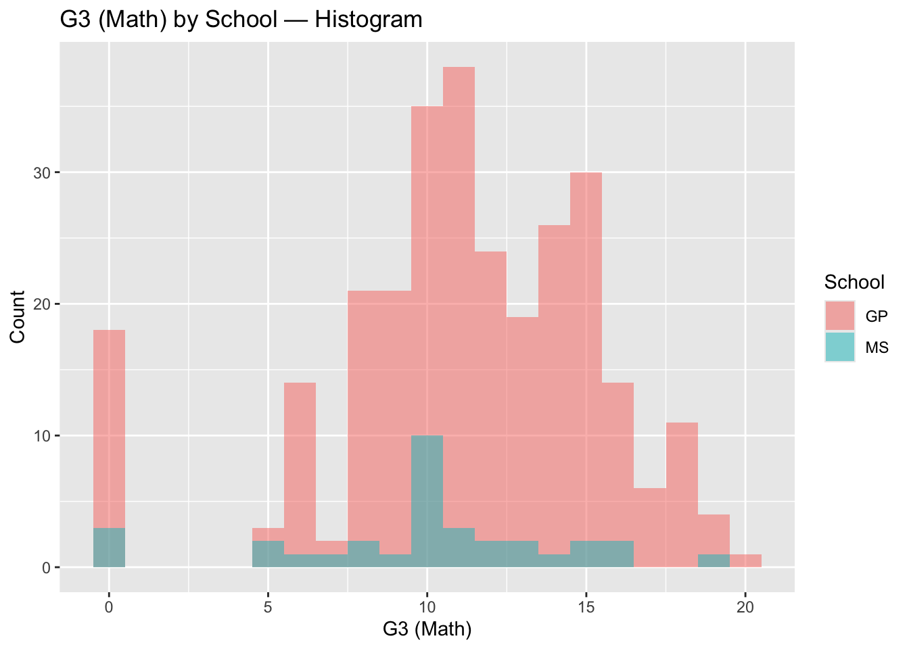
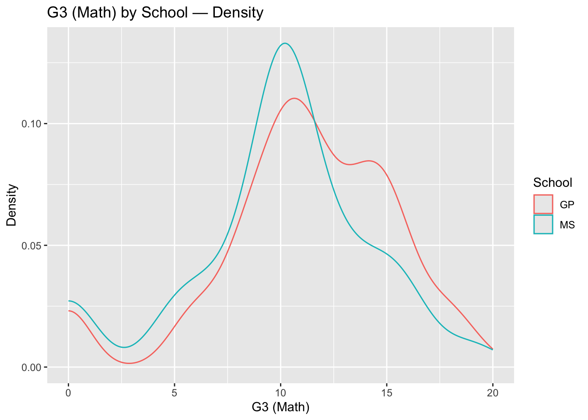
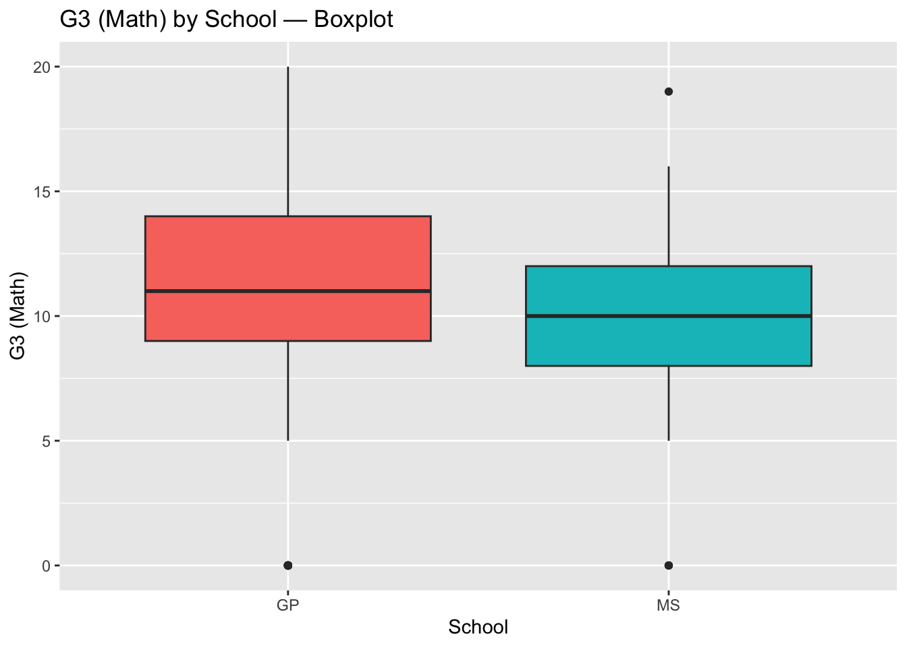
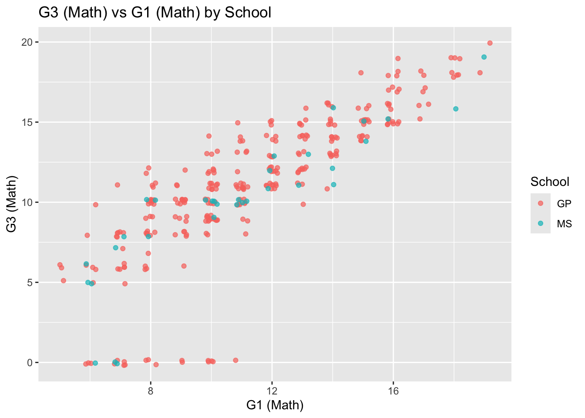
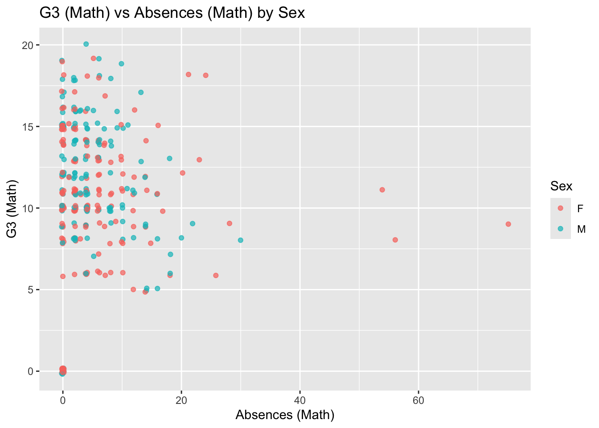
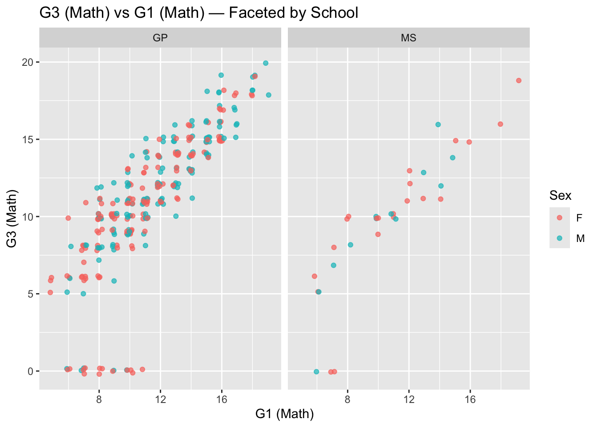

Read in the data and modify the code they had already provided.
library(tidyverse)math<-read.table("student-mat.csv",sep=";",header=TRUE)port<-read.table("student-por.csv",sep=";",header=TRUE)comb<-inner_join(math,port, by=c("school","sex","age","address","famsize","Pstatus","Medu","Fedu","Mjob","Fjob","reason","nursery","internet"))print(nrow(comb)) # 382 students
[1] 382
After using inner_join instead of merge, received a warning that there were multiple rows of x that matched in y and y that matched in x. This warning tells us that the keys provided were not unique and produces a many-to-many relationship. Essentially we had repeated observations throughout. In terms of this data set there is data on the same students who took math as well as Portuguese.
Use an inner_join on all variables except G1,G2,G3, paid and absences. Created other_vars with all of the variables we needed.
For all 3 data frames change 4 of the categorical variables to factors.
#Choosing (address,famsize,Pstatus,school)math |>mutate(address=as.factor(address),famsize=as.factor(famsize),Pstatus=as.factor(Pstatus),school=as.factor(school))#repeat for the other data frames port |>mutate(address=as.factor(address),famsize=as.factor(famsize),Pstatus=as.factor(Pstatus),school=as.factor(school))comb_main |>mutate(address=as.factor(address),famsize=as.factor(famsize),Pstatus=as.factor(Pstatus),school=as.factor(school))
Task 2: Summarize the Data (Very Basic EDA)
Check how the data is stored, look at the column data types and make sure they make sense as well as look at the structure of the data. Only using comb_main from now on.
After looking at the variables, there is a list of variables that I feel would be better suited as factors rather than integers, this is because they are in ordinal bins from 1-5 and thus in categories with meaning.
::: {.cell}
```{.r .cell-code}
#changing traveltime, studytime, failures, health, walc, dalc, gout,freetime and famrel to factors with levels to better represent the data.
comb_main <- comb_main |>
mutate(
traveltime = factor(traveltime,
levels = 1:4,
labels = c("<15 min", "15–30 min", "30 min–1 hour", ">1 hour")),
studytime = factor(studytime,
levels = 1:4,
labels = c("<2 hrs", "2–5 hrs", "5–10 hrs", ">10 hrs")),
failures = factor(failures,
levels = 0:3, # dataset codes 0,1,2,3 (3 = 3+)
labels = c("none", "1", "2", "3+")),
health = factor(health,
levels = 1:5,
labels = c("very bad", "bad", "average", "good", "very good")),
Walc = factor(Walc,
levels = 1:5,
labels = c("very low", "low", "average", "high", "very high")),
Dalc = factor(Dalc,
levels = 1:5,
labels = c("very low", "low", "average", "high", "very high")),
goout = factor(goout,
levels = 1:5,
labels = c("very low", "low", "average", "high", "very high")),
freetime = factor(freetime,
levels = 1:5,
labels = c("very low", "low", "average", "high", "very high")),
famrel = factor(famrel,
levels = 1:5,
labels = c("very bad", "bad", "average", "good", "excellent"))
)
::: Using colSums to sum up the missing values in each variable.
colSums(is.na(comb_main))
There are no missing values in the combined data set.
#Catagorical Variables
Create one-way,two-way and 3-way contigency tables for some of the factor variables from earlier.
#one-way contingency table looking at school. one_way <-table(comb_main$school)one_way
GP MS
287 33
In the combined data set there are 33 students that go to the school named Mousinho da Silveira
#two-way contingency table looking at school and Pstatus. two_way <-table(comb_main$school, comb_main$Pstatus)two_way
A T
GP 30 257
MS 1 32
In the combined data set there is 1 student that goes to Mousinho da Silveira whos parents are ‘Apart’.
, , = R
A T
GP 5 43
MS 0 19
, , = U
A T
GP 25 214
MS 1 13
There is 1 student that goes to Mousinho da Silveira whos parents are apart and lives at an Urban address. Creating a two-way table by subsetting the data with filter first.
Create a two-way contingency table using group_by() and summarize() from dplyr. Then use pivot_wider() to make the result look more like the output from table().
# A tibble: 4 × 6
school sex n mean_age med_G3m sd_abs_m
<chr> <chr> <int> <dbl> <dbl> <dbl>
1 GP F 153 16.5 11 9.80
2 GP M 134 16.3 12 5.55
3 MS F 21 17.7 10 5.04
4 MS M 12 18 10 3.73
ggplot(comb_main, aes(G3.x, fill = school)) +geom_histogram(position ="identity", alpha =0.5, binwidth =1) +labs(title="G3 (Math) by School — Histogram", x="G3 (Math)", y="Count", fill="School")

ggplot(comb_main, aes(G3.x, color = school)) +geom_density() +labs(title="G3 (Math) by School — Density", x="G3 (Math)", y="Density", color="School")

ggplot(comb_main, aes(x = school, y = G3.x, fill = school)) +geom_boxplot() +labs(title="G3 (Math) by School — Boxplot", x="School", y="G3 (Math)") +guides(fill ="none")

Create 2 scatter plots
ggplot(comb_main, aes(x = G1.x, y = G3.x, color = school)) +geom_jitter(width=.2, height=.2, alpha=.7) +labs(title="G3 (Math) vs G1 (Math) by School", x="G1 (Math)", y="G3 (Math)", color="School")

ggplot(comb_main, aes(x = absences.x, y = G3.x, color = sex)) +geom_jitter(width=.2, height=.2, alpha=.7) +labs(title="G3 (Math) vs Absences (Math) by Sex", x="Absences (Math)", y="G3 (Math)", color="Sex")

What it interesting here is that we see that GP has more higher achieving students than MS. faceting by school to obtain scatter graphs at each school for the G1 and G3 variables.
ggplot(comb_main, aes(x = G1.x, y = G3.x, color = sex)) +geom_jitter(width=.2, height=.2, alpha=.7) +facet_wrap(~ school) +labs(title="G3 (Math) vs G1 (Math) — Faceted by School", x="G1 (Math)", y="G3 (Math)", color="Sex")

Faceting by sex and school to see both G3 and G1 by sex and school.
ggplot(comb_main, aes(x = absences.x, y = G3.x, color = sex)) +geom_jitter(width=.2, height=.2, alpha=.7) +facet_grid(sex ~ school) +labs(title="G3 (Math) vs Absences (Math) — by Sex & School", x="Absences (Math)", y="G3 (Math)", color="Sex")